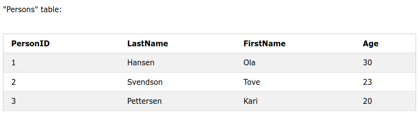
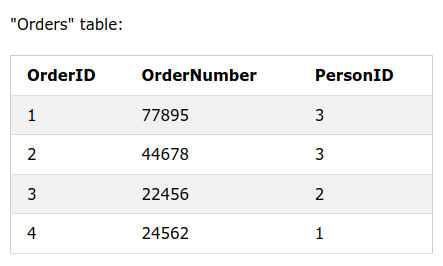
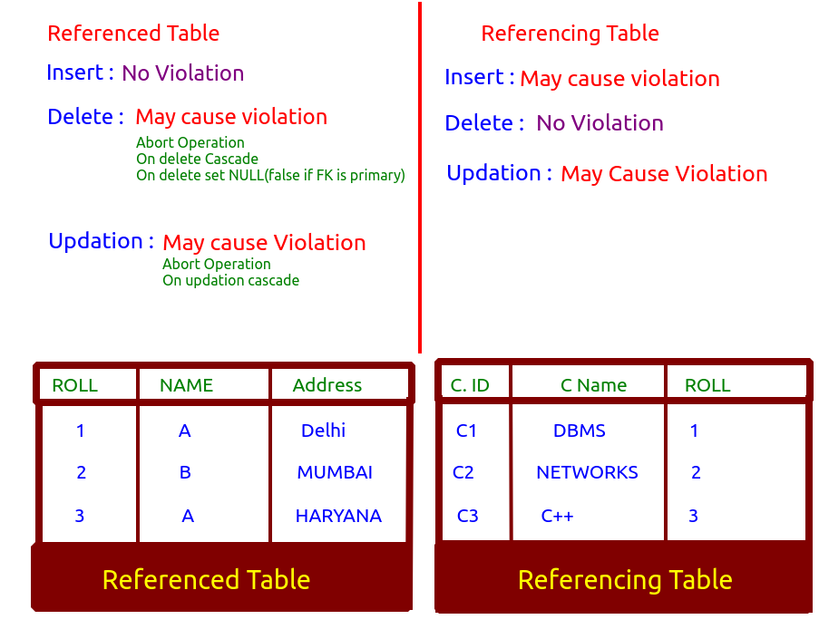

Key
Que: What is key?
Ans: It's attribute(column) of a table.
Que: What is the use of a key?
Ans: -> To uniquely identify any two tuple(row) in the table.
-> To establish relationship among tables.
Scenerio
Let's assume we have a database of students with following entries :
(Adhaar Number, Roll Number, Registration Number, Lisence Number, Voter ID, Phone Number , Name, Marks, CGPA, EMAIL-ID)
Super Key
It's a group of single or multiple keys which identifies rows in a table. Superset of candidate key is super key.
Primary Key{Unique + Not Null}
A primary key, also called a primary keyword, is a key in a relational database that is unique for each record. A relational database must always have one and only one primary key.
In above scenerio Roll Number can be a primary key.
Candidate key
It's a set of attributes(columns) that uniquely identifies tuples in a table. It's a superkey with no related attributes.
In above scenerio Roll Number, Adhaar, Reg No, Lisence Number, VoterID,Phone, Email ID can be a primary key.
Foreign Key
A Foreign key is a field(or a collection of field) in one table that refers to the Primary Key in another table.
It maintains Refrential Integrity.


The FOREIGN KEY constraint also prevents invalid data from being inserted into the foreign key column,because it has to be one of the values contained in the table it points to.
